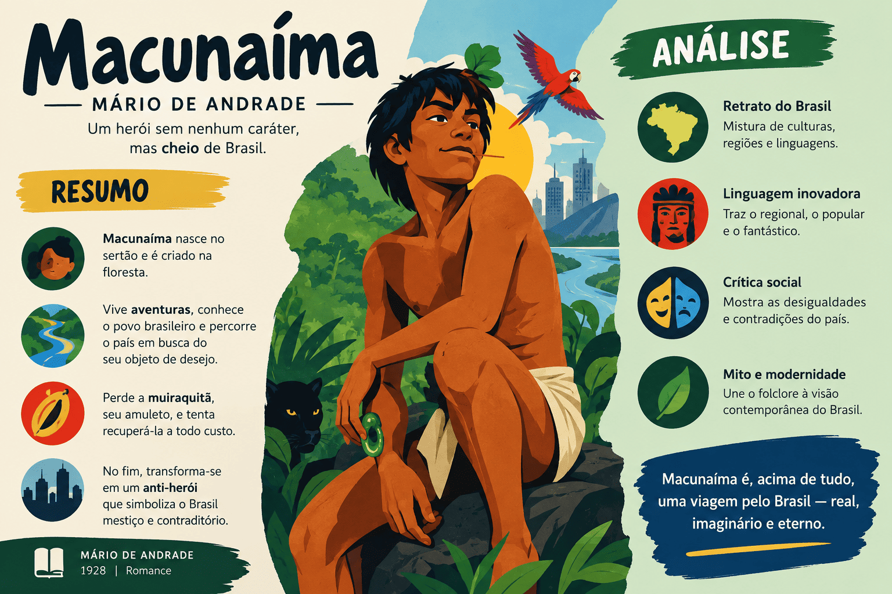

Macunaíma: resumo, análise completa, personagens e temas
Macunaíma: o herói sem nenhum caráter, de Mário de Andrade, é a obra capital da primeira fase do Modernismo brasileiro. Publicada em 1928, a narrativa acompanha a trajetória mítica de Macunaíma, desde o seu nascimento nas matas virgens de Roraima até sua jornada a São Paulo em busca de um talismã roubado e seu retorno solitário à selva ancestral.
Mais do que uma aventura folclórica, o livro investiga a formação da identidade nacional, o choque entre a cultura indígena e a civilização mecânica, o hibridismo racial e a busca por uma língua literária genuinamente brasileira. Em vez de adotar as regras do romance clássico, Mário de Andrade construiu uma rapsódia que funde mitos indígenas, cantigas populares, lendas afro-brasileiras e sátira social.
O leitor não encontra um herói virtuoso e moralmente exemplar aos moldes do Romantismo do século XIX. Macunaíma é preguiçoso, sensual, instável e astuto, encarnando um povo que, segundo o autor, ainda não possuía uma fisionomia psicológica consolidada e vivia em constante improvisação.
Nesta análise, você encontrará o resumo completo de Macunaíma, a explicação dos personagens, dos símbolos e da estrutura rapsódica, além de uma discussão aprofundada sobre a célebre expressão: o que significa um herói sem nenhum caráter?

Resumo essencial de Macunaíma:
- Macunaíma nasce no fundo do mato-virgem, no Uraricoera, preto e calado;
- passa os primeiros seis anos de vida repetindo o bordão: "Ai! que preguiça!...";
- cresce ao ser banhado pelo caldo envenenado de aipim, mas preserva a cabeça infantil;
- desposa Ci, a Mãe do Mato, e herda dela o talismã sagrado da muiraquitã;
- após perder a muiraquitã, descobre que ela está em São Paulo com o gigante Piaimã;
- ao longo da viagem para o sul, toma banho na pegada de Sumé e clareia a pele;
- os três irmãos personificam a tríade étnica nacional: o branco, o indígena e o negro;
- em São Paulo, o herói descobre o império das máquinas e trava lutas burlescas com Piaimã;
- participa de uma macumba no Rio de Janeiro para espancar o gigante à distância por meio de Exu;
- redige a hilariante "Carta pras Icamiabas", satirizando o pedantismo dos letrados brasileiros;
- derrota Piaimã empurrando-o no tacho de macarronada fervente e recupera o talismã;
- retorna à Amazônia, perde os irmãos, tem o corpo dilacerado pela Uiara e sobe ao céu como a Ursa Maior.
Aviso: esta página apresenta acontecimentos decisivos e o desfecho da obra. Se você pretende ler a obra sem conhecer o final, faça primeiro a leitura integral.
Ficha técnica de Macunaíma
| Informação | Dados |
|---|---|
| Título | Macunaíma: o herói sem nenhum caráter |
| Autor | Mário de Andrade |
| Publicação | 1928 |
| Gênero | Rapsódia (narrativa mítica e experimental) |
| Escola literária | Modernismo brasileiro (1ª fase — Fase Heroica) |
| Narrador | Narrador em terceira pessoa com dicção oral (revelado no Epílogo como ouvinte do papagaio) |
| Estrutura | 17 capítulos e um Epílogo |
| Tempo | Mítico e atemporal, integrando elementos ancestrais e contemporâneos |
| Espaço principal | Espaço desgeografizado: floresta amazônica (Uraricoera), São Paulo, Rio de Janeiro e sertões |
| Temas centrais | Identidade nacional, hibridismo racial, linguagem coloquial, mito e modernidade mecânica |
Mário de Andrade e o Modernismo brasileiro
Mário Raul de Morais Andrade nasceu em São Paulo, em 1893, e faleceu em 1945. Polígrafo notável, destacou-se como poeta, romancista, musicólogo, folclorista, crítico de arte e gestor cultural. Foi uma das figuras centrais da Semana de Arte Moderna de 1922 e um dos pioneiros da pesquisa etnográfica no Brasil.
A primeira fase do Modernismo caracterizou-se pelo nacionalismo crítico, pela destruição dos padrões acadêmicos europeus, pelo resgate da cultura popular e pela valorização da língua falada pelo povo. Mário viajou pelo interior do país compilando cantigas, mitos orais, dialetos e tradições indígenas e afro-brasileiras.
Em Macunaíma, essas pesquisas convergem para uma proposta estética antropofágica: devorar as matrizes culturais nativas (especialmente os mitos recolhidos pelo etnólogo alemão Theodor Koch-Grünberg) e os elementos da modernidade cosmopolita para recriar artisticamente o Brasil.
Conheça também a história, as fases e as características do Modernismo no Brasil .
O significado do subtítulo: “o herói sem nenhum caráter”
No subtítulo da obra, Mário de Andrade emprega a palavra “caráter” com duplo significado, dialogando com reflexões sociológicas e culturais sobre a nossa formação histórica.
Em primeiro lugar, refere-se à ausência de traços psicológicos ou morais estáveis: Macunaíma não é bom nem mau, corajoso nem covarde de forma definitiva; muda de atitude e de feição conforme as circunstâncias imediatas. Em segundo lugar, aponta para a inexistência de uma identidade cultural plenamente consolidada na jovem nação brasileira.
“Sem nenhum caráter” indica que o brasileiro ainda não possuía uma forma definitiva. Ele se encontrava em estado de constante transição e plasticidade, definindo-se pela fusão de diferentes culturas e pela arte do improviso cotidiano.
Por que Macunaíma é classificado como uma rapsódia?
Mário de Andrade recusou deliberadamente classificar Macunaíma como um romance tradicional. O autor definiu a obra como uma rapsódia, termo que originalmente designava o canto dos poetas da Antiguidade grega que costuravam fragmentos e lendas preexistentes.
O livro foi construído mediante a colagem de narrativas orais taulipangues e arecunás, lendas amazônicas, contos populares nordestinos, superstições afro-brasileiras, provérbios e anedotas urbanas. Mário organizou esse vasto material em uma estrutura musical polifônica.
Romance tradicional:
Segue uma cronologia linear, mantém coerência geográfica, baseia-se em psicologia verossímil e subordina-se à norma gramatical acadêmica.
Rapsódia modernista:
Reúne fragmentos folclóricos díspares, suspende a lógica de causa e efeito, abole as distâncias do mapa e adota a liberdade rítmica da fala oral.
Estrutura narrativa de Macunaíma
A narrativa compõe-se de 17 capítulos intitulados e de um Epílogo. Cada capítulo funciona como um episódio quase autônomo, repleto de metamorfoses mágicas, provações cômicas, duelos xamânicos e reflexões satíricas sobre a vida brasileira.
A articulação entre os episódios não obedece à lógica realista burguesa. O enredo avança por saltos espaciais fantásticos, anacronismos temporais intencionais e associações próprias do pensamento mítico e dos contos maravilhosos.
Tempo mítico e tempo histórico
| Plano temporal | Características |
|---|---|
| Tempo do mito primordial | Época em que os animais eram gente e a natureza passava por contínuas transmutações cosmológicas. |
| Tempo histórico moderno | A São Paulo da década de 1920, com arranha-céus, automóveis, moeda bancária, imprensa e ferrovias. |
| Efeito de sobreposição | Figuras históricas de séculos distintos e entidades lendárias convivem de forma simultânea e atemporal. |
Os espaços principais e a desgeografização
- Uraricoera: rio e região de Roraima, espaço sagrado da infância, da tribo e da dissolução final;
- Cafundó do Judas e matas: cenários de provações, encontros com entidades (Currupira, cotia) e metamorfoses;
- São Paulo: a metrópole capitalista, polo industrial, reino da Máquina e morada de Piaimã;
- Rio de Janeiro: local de apelo às forças místicas (terreiro de Tia Ciata) e cenário da quebra do pacto com a Sol;
- O Céu estelar: refúgio final das personagens que se libertam da terra (Ci, Capei e o próprio Macunaíma).
Resumo completo de Macunaíma
O nascimento e a meninice no mato
Macunaíma nasce no coração da selva amazônica, banhada pelas águas do rio Uraricoera. É filho da índia tapanhumas e do medo da noite, vindo ao mundo preto retinto. Desde cedo demonstra indolência absoluta: passa mais de seis anos sem falar e, quando estimulado, profere sua máxima: “Ai! que preguiça!...”.
Sua única ocupação é decepar cabeças de saúva e atentar contra a paciência da família, urinando na rede da mãe. No entanto, agita-se na presença de dinheiro e diante de mulheres. Aos seis anos, após beber água em chocalho cerimonial, começa a falar e seduz Sofará, companheira de seu irmão Jiguê, transformando-se na mata em um príncipe formoso para “brincar” com ela.
A transformação em adulto e a morte da mãe
Diante de uma grave escassez de alimentos na maloca, Macunaíma esconde as caças e ri da fome dos manos. Irritada com as trapaças do menino, a mãe o abandona na vastidão do Cafundó do Judas. Na solidão, o curumim encontra o Currupira moqueando carne da própria perna; come da carne, mas escapa do monstro vomitando-a em uma poça.
Mais adiante, encontra a cotia trabalhando no tipiti de mandioca. A cotia atira nele o caldo envenenado de aipim: o herói esquiva-se, mas apenas a cabeça escapa da lavagem. Seu corpo desenvolve-se rapidamente, assumindo a estatura de um homem forte, mas a cabeça permanece com feições de piá. De volta à taba, passa a viver com Iriqui, a nova mulher de Jiguê.
Durante uma caçada, o herói persegue um veado e flecha mortalmente a fêmea. Ao examinar o corpo abatido, descobre com horror que fora enganado por uma ilusão do Anhanga: a corsa era sua própria mãe tapanhumas. Os três irmãos realizam o funeral da mãe, cujo corpo incha até virar um morro no sítio do Pai da Tocandeira, e abandonam a terra natal.
Ci, Mãe do Mato e o amuleto da muiraquitã
Em suas andanças pela floresta, Macunaíma depara-se com Ci, a Mãe do Mato, líder soberana da tribo das guerreiras Icamiabas (as Amazonas), que possuía o peito direito seco para melhor retesar o arco. O herói tenta possuí-la à força, mas leva uma sova formidável da guerreira. Vendo-se vencido, chama pelos irmãos, que subjugam Ci a golpes de murucu.
Dominada, Ci entrega-se a Macunaíma, que é saudado pelos pássaros como o Imperador do Mato-Virgem. Da união nasce um menino vermelho. Tempos depois, a terrível Cobra Preta suga o único seio nutriz de Ci; ao mamar o veneno, a criança morre, sendo enterrada na taba (de sua sepultura brota o guaraná). Desolada, Ci ascende ao céu por um cipó e se converte na estrela Beta do Centauro, deixando a Macunaíma a muiraquitã, amuleto talismânico de pedra verde esculpido em forma de sáurio.
A perda da muiraquitã e a pista de Venceslau Pietro Pietra
Macunaíma fura o lábio inferior e coloca a muiraquitã como tembetá. Mais tarde, socorre a donzela Naipi e decapita a cobra-monstro Capei com um rochedo. A cabeça decepada ganha vida e passa a perseguir os irmãos. Durante a correria, o herói sobe em um bacuparizeiro e deixa cair a muiraquitã na areia do rio.
A cabeça de Capei sobe aos céus com a ajuda de uma aranha caranguejeira e geada andina, virando a Lua. Angustiado pela perda da joia, Macunaíma descobre o paradeiro do amuleto por meio do canto do uirapuru: a pedra fora engolida por uma tartaruga, apanhada por um mariscador e vendida ao regatão peruano Venceslau Pietro Pietra, homem enriquecido que residia em São Paulo. O herói e seus irmãos decidem marchar até a metrópole paulista.
O banho encantado e a tríade racial
Antes de partir para o sul, Macunaíma deixa a própria consciência amarrada no alto de um mandacaru na ilha de Marapatá, para que não seja devorada pelas saúvas. Financiados por sacos de cacau recolhidos nos tesouros da selva, os três irmãos descem os rios rumo à civilização.
No caminho, atormentados pelo calor e temendo os cardumes de piranhas, encontram uma lapa de pedra contendo água acumulada na pegada gigantesca de Sumé, antigo evangelizador mítico:
Macunaíma (o homem branco):
Mergulha primeiro na água limpa e milagrosa. A negrura de sua pele é totalmente lavada, e ele ressurge branco, loiro e de olhos azuis.
Jiguê (o homem indígena):
Atira-se na água já turvada pela tinta do irmão. Consegue clarear parte do corpo, adquirindo a tonalidade acobreada do bronze novo.
Maanape (o homem negro): encontra apenas uma poça lamacenta no fundo da cova. Consegue molhar somente as palmas das mãos e as solas dos pés, permanecendo negro com as extremidades avermelhadas. O episódio configura alegoricamente as três matrizes formadoras da sociedade brasileira.
A chegada a São Paulo e o reinado da Máquina
Ao ingressarem em São Paulo, os irmãos descobrem que a moeda tradicional de cacau não tem valor no mundo urbano. Maanape negocia as reservas na Bolsa e obtém cerca de oitenta contos de réis. Eles se instalam em uma modesta pensão familiar.
Diante do tráfego ruidoso e do gigantismo metropolitano, a imaginação mítica do herói interpreta o cenário urbano: os automóveis são feras velozes, os bondes são tamanduás e os elevadores são macacos mecânicos. Macunaíma apaixona-se pela nova divindade cultuada pelos homens: a Máquina. Ao perceber que os próprios operários e cidadãos vivem escravizados pelo ritmo do maquinismo, formula sua síntese: os homens é que viraram máquinas e as máquinas é que viraram homens.
Os combates contra Piaimã
Macunaíma descobre que Venceslau Pietro Pietra mora em um casarão cercado de mato na Rua Maranhão, no bairro de Higienópolis. O homem é, na verdade, o temível gigante antropófago Piaimã, que vive acompanhado da mulher Ceiuci, a Caapora canibal.
Inicia-se uma série de duelos astutos entre os dois:
- o gigante flecha Macunaíma em seu quintal, esquarteja-o em pedaços e o cozinha em polenta; Maanape invade a adega, resgata os restos mortais e ressuscita o irmão soprando fumo e dando-lhe guaraná;
- o herói disfarça-se de elegante cortesã francesa para negociar a devolução do amuleto; Piaimã recusa ceder a joia e tenta possuir a "francesa", prendendo-a em uma armadilha de cera de carnaúba;
- Macunaíma consegue soltar-se e empreende uma fuga espetacular por diversas regiões do território brasileiro até despistar o monstro.
A macumba no Rio de Janeiro
Reconhecendo que não possui força muscular suficiente para subjugar Piaimã em luta corporal direta, Macunaíma viaja de trem ao Rio de Janeiro no inverno para invocar a proteção dos orixás. Procura o terreiro da célebre mãe-de-santo Tia Ciata, localizado na região do Mangue.
Na cerimônia sincrética, que congrega desde intelectuais modernistas até operários e parlamentares, a entidade Exu incorpora em uma prostituta polaca. Macunaíma é consagrado filho de Exu e solicita que o espírito (“o eu”) de Venceslau Pietro Pietra seja transferido para o corpo do cavalo do terreiro. Com a permissão do orixá, o herói desfere uma surra impiedosa com uma tranca de madeira, fazendo com que o gigante sangre e estrebuche em seu palacete em São Paulo simultaneamente.
O encontro com a Sol e o dístico nacional
Após a sessão mística, Macunaíma acorda em uma ilhota na Baía de Guanabara, coberto pela sujeira de um urubu. É socorrido pela deusa Vei, a Sol, que o acolhe em sua jangada e propõe casá-lo com uma de suas filhas de luz, concedendo-lhe como dote o domínio sobre as terras do mundo e a juventude perene, desde que ele se mantenha fiel.
Mal a deusa se ausenta pelas avenidas do Rio, Macunaíma sucumbe à lascívia e se deita com uma varina portuguesa que cheirava a peixe. Flagrado em flagrante delito, é deserdado por Vei, perdendo a juventude eterna. Amaldiçoado pela divindade, o herói ergue os braços e proclama o dístico que sintetiza a fraqueza e as pragas da terra:
“POUCA SAÚDE E MUITA SAÚVA, OS MALES DO BRASIL SÃO.”
A Carta pras Icamiabas (Capítulo IX)
Interrompendo a narrativa cronológica, Macunaíma redige uma epístola às suas súbditas amazonas prestando contas de suas atividades em São Paulo. O documento é vazado em um estilo deliberadamente arcaico, lusitano e parnasiano, pontuado por latinismos pedantes e construções empoladas.
Na carta, o herói retrata as contradições da vida moderna, os bordéis de polacas, a venalidade da política e as manobras da imprensa. O ponto fulcral da carta é a denúncia do bilinguismo alienado que assola o país: afirma assombrado que os paulistanos “falam numa língua e escrevem noutra”, criticando o fosso que separa a retórica vazia da realidade nacional.
Pauí-Pódole e a revelação do céu
Em um comício cívico diante do monumento do Ipiranga, um orador empertigado discursa sobre a constelação do Cruzeiro do Sul como emblema sublime da civilização cristã e republicana. Macunaíma interrompe o ato bradando: “Não é não!”.
O herói assume o palanque e ensina a verdadeira cosmologia indígena: as quatro estrelas não formam cruz alguma, mas constituem o corpo místico de Pauí-Pódole, o Pai do Mutum, que subira ao firmamento guiado por enxames de vaga-lumes para escapar do ataque de formigas venenosas enviadas por um pajé adversário.
A queda no tacho e a morte de Piaimã
Restabelecido da sova mágica e retornado de uma viagem pela Europa, Piaimã prepara um banquete festivo. Macunaíma invade o palacete e é convidado pelo anfitrião a brincar em um balanço de cipó suspenso sobre uma cova onde a velha Ceiuci ferve um caldeirão de macarronada temperada com carne humana.
Percebendo a armadilha, o herói finge receio e pede que o anfitrião mostre primeiro como se balança. Quando o gigante toma assento no cipó de japecanga, Macunaíma aplica um empurrão brutal: Piaimã despenca dentro do caldeirão fumegante. Em agonia burlesca, o devorador prova a própria mistura e profere suas últimas palavras antes de morrer cozido: “FALTA QUEIJO!”. Macunaíma resgata vitorioso a sua muiraquitã.
A partida de São Paulo e os desastres do retorno
De posse da pedra sagrada, Macunaíma decide voltar para a terra natal com os irmãos e uma princesa desencantada. Antes de transpor a serra do Jaraguá, lança um feitiço e petrifica a capital paulista em um gigantesco bicho-preguiça de pedra. Leva consigo os troféus da civilização burguesa: um revólver Smith & Wesson, um relógio Pathek e um casal de galinhas leghorne.
O retorno ao Uraricoera converte-se em desagregação contínua. Descontente com Jiguê, o herói prepara um anzol envenenado com dente de sucuri; ao tocar a peça, Jiguê contrai lepra fulminante que lhe devora a carne até restar apenas a sua sombra faminta. A sombra consome o fogo, engole Maanape e devora a princesa. Macunaíma consegue despistá-la no Nordeste jogando-a sobre o boi do auto do Bumba-meu-Boi.
A perda definitiva da muiraquitã e a morte do herói
Chegando só à tapera decadente de seus antepassados, prostrado pela malária e dominado pela inércia, o herói é perseguido pela vingança tardia de Vei, a Sol. A divindade faz surgir nas águas de um lago próximo o reflexo deslumbrante da Uiara, a Mãe-d'Água.
Atraído pela sedução fatal da ninfa, Macunaíma mergulha desvairado nas águas. O fundo da lagoa revela-se um pesadelo: o herói é estraçalhado por cardumes de peixes carnívoros. Consegue arrastar-se de volta à margem mutilado, cego de um olho, sem pernas e sem os órgãos viris. Descobre, em desespero inconsolável, que o peixe-monstro Ururau devorou também seu lábio inferior, tragando para sempre a sagrada muiraquitã nas profundezas d'água.
Sem a muiraquitã, Macunaíma perde a ligação com suas origens, com sua soberania mítica e com o sentido da própria existência.
A metamorfose em Ursa Maior e o Epílogo
Sem forças para reconstruir a maloca e recusando-se a viver prostrado na terra sem saúde e assolada por saúvas, Macunaíma grava sobre a pedra o epitáfio: “Não vim no mundo para ser pedra”. Planta uma semente de cipó matamatá e escala até o céu.
Rejeitado pela Lua e pela Estrela-da-Manhã devido ao seu odor terreno, é acolhido com piedade por Pauí-Pódole, que o transforma, juntamente com seu revólver, seu relógio e seus frangos, na constelação da Ursa Maior, brilhando de forma solitária e inútil na abóbada celeste.
No Epílogo, um homem (o narrador) visita as paragens desertas do Uraricoera, onde a tribo tapanhumas pereceu por completo. Ali encontra um papagaio verde de bico dourado que memorizou as façanhas e a fala da gente de Macunaíma. A ave relata-lhe todos os casos e voa para Lisboa. O narrador dedilha sua viola e registra por escrito a história do herói da nossa gente.
Principais personagens
| Personagem | Função e características |
|---|---|
| Macunaíma | Protagonista e “herói da nossa gente”. Metamórfico, preguiçoso, sensual e astuto, encarna a identidade brasileira em processo de gestação, desprovida de traços morais ou psicológicos fixos. |
| Ci, Mãe do Mato | Líder virgem das Icamiabas (Amazonas). Conquistada por Macunaíma, torna-se sua esposa e gera um filho que morre envenenado. Ao subir ao céu como estrela, deixa a muiraquitã como herança. |
| Venceslau Pietro Pietra (Piaimã) | Gigante comedor de gente de feição ítalo-peruana, estabelecido em São Paulo como abastado fazendeiro e colecionador de pedras. Retém a muiraquitã e personifica o capital explorador. |
| Maanape | Irmão mais velho de Macunaíma. Feiticeiro prudente e conhecedor de pajelanças, ressuscita o herói diversas vezes e representa a matriz negra na cena do banho na pegada de Sumé. |
| Jiguê | Irmão do meio. Trabalhador, paciente e ingênuo, é constantemente enganado por Macunaíma. Na cena do banho, assume a cor de bronze (o indígena). Sua morte gera a temível sombra leprosa. |
| Ceiuci | Esposa de Piaimã; personificação mítica da Caapora gulosa que captura viajantes para devorá-los em cozidos e caldeirões. |
| Vei, a Sol | Divindade cósmica que socorre Macunaíma, oferecendo-lhe a juventude eterna em troca de fidelidade à sua filha; diante da traição do herói, transforma-se em sua perseguidora implacável. |
| Uiara (Iara) | Mãe-d'Água de beleza irresistível. Atrai Macunaíma para o fundo do lagoão com falsas promessas de amor, onde piranhas o dilaceram e roubam a muiraquitã definitivamente. |
| Sofará e Iriqui | Companheiras de Jiguê sucessivamente cobiçadas e seduzidas por Macunaíma, evidenciando o impulso erótico desinibido e a falta de escrúpulos fraternos do protagonista. |
| Tia Ciata | Mãe-de-santo histórica do Mangue carioca, em cujo terreiro realiza-se a macumba em que Macunaíma surra o espírito de Piaimã encarnado por meio de Exu. |
| Pauí-Pódole | O Pai do Mutum. Entidade mítica que ascendeu aos céus fugindo das formigas e que, apiedando-se do destino desolador de Macunaíma, o transforma na constelação da Ursa Maior. |
| O Papagaio | Ave que habita a ramaria deserta do Uraricoera; único guardião da língua e dos feitos da tribo extinta, transmitindo oralmente toda a saga ao narrador. |
O herói romântico versus o herói modernista
A construção de Macunaíma representa uma resposta direta e paródica ao modelo de herói nacional formulado pelo Romantismo indianista do século XIX, cujo expoente máximo foi José de Alencar em obras como O Guarani e Iracema.
Enquanto o projeto romântico necessitava erguer um mito de nobreza cavaleiresca e idealização moral para equiparar o passado brasileiro às tradições feudais europeias, o Modernismo de 1928 parte da observação realista e crítica da mestiçagem, do subdesenvolvimento e da heterogeneidade cultural do país.
Peri (Romantismo alencariano):
Indígena virtuoso, casto, obediente, fiel e moralmente perfeito, dotado de atributos herdados do herói da cavalaria europeia.
Macunaíma (Modernismo mariano):
Herói multifacetado, lascivo, preguiçoso, vingativo e instável, que transita livremente entre a sabedoria mágica e o logro cotidiano.
A paródia modernista não visa diminuir o povo brasileiro, mas expor suas contradições constitutivas, libertando a literatura do artificialismo idealista e revelando uma identidade fundada no sincretismo e na recusa à tutela cultural estrangeira.
A invenção da “língua brasileira” e a oralidade
O principal objetivo estético de Mário de Andrade em Macunaíma foi criar uma linguagem literária baseada no português falado no Brasil, rompendo definitivamente com os dogmas gramaticais herdados de Portugal e com a dicção artificial dos parnasianos.
O autor não se limitou a reproduzir uma variante regional isolada (como o linguajar caipira ou nordestino). Realizou uma síntese pan-brasileira, fundindo termos indígenas, expressões populares, construções de matriz africana e sintaxes coloquiais de todas as regiões geográficas do país em um tecido estilístico contínuo.
Estratégias linguísticas e estéticas
- uso deliberado da próclise no início de frases, reproduzindo o ritmo natural da fala cotidiana;
- incorporação orgânica do vocabulário indígena de origem tupi e nheengatu;
- utilização expressiva de onomatopeias e interjeições nativas ("juque!", "sarapantar", "tó!");
- fusão de dialetos regionais: termos sulistas ("pagos", "querência") convivem com expressões amazônicas e nordestinas;
- adoção de estruturas sintáticas orais, marcadas por elipses, anacolutos e repetições rítmicas;
- reaproveitamento poético de provérbios, ditados populares e cantigas tradicionais de roda;
- mistura de registros estilísticos: palavras chulas e escatológicas aparecem ao lado de termos técnicos e arcaísmos;
- paralelismo rítmico derivado das fórmulas narrativas de contos de fadas e relatos religiosos tradicionais;
- criação de neologismos lúdicos que expandem a plasticidade expressiva da língua;
- ruptura irônica entre a norma-padrão escrita e a energia criativa da oralidade nacional.
Mário de Andrade demonstrou que a fala brasileira possuía uma sintaxe e uma música próprias, dotadas de dignidade artística suficiente para sustentar uma epopeia de alcance universal.
A “Carta pras Icamiabas”: paródia e bilinguismo
O nono capítulo de Macunaíma, intitulado “Carta pras Icamiabas”, interrompe o fluxo rapsódico em terceira pessoa para introduzir um documento epistolar em que o herói escreve às suas súbditas amazonas, relatando suas impressões sobre a cidade de São Paulo.
A carta constitui uma paródia corrosiva da linguagem empolada, bacharelesca e pedante cultivada pelos intelectuais e juristas do início do século XX. Macunaíma redige o texto em um português estritamente lusitano, castiço e arcaizante, pontuado por termos em latim e fórmulas rebuscadas, enquanto relata situações mundanas como farras em bordéis, a opulência das máquinas e as trapaças financeiras da metrópole.
O ponto central do capítulo é a constatação satírica de que os paulistanos e brasileiros letrados “falam numa língua e escrevem noutra”, revelando a alienação de uma elite que desprezava a fala viva da própria terra para imitar o vernáculo lusitano arcaico.
Macunaíma tem ou não tem caráter?
A ausência de caráter anunciada no subtítulo da obra não deve ser interpretada de modo simplista como um julgamento moralista sobre a maldade ou a falta de princípios do protagonista.
O que a obra apresenta como traços do herói
- o apego desmedido ao sono, ao descanso e à frase recorrente: "Ai! que preguiça!...";
- o interesse imediato por vantagens materiais e dinheiro;
- a busca incessante pelo prazer sexual, sem fidelidade ou comedimento;
- a disposição para mentir e inventar fábulas com o intuito de escapar de obrigações;
- o uso de trapaças e estratagemas para superar adversários muito mais fortes;
- a capacidade instantânea de transformar a própria aparência e de se adaptar a qualquer meio.
Por que a expressão não significa mera desonestidade
- o conceito de caráter refere-se, em sentido psicológico, a um conjunto de traços imutáveis e fixos;
- o povo brasileiro é compreendido pelo autor como uma entidade histórica jovem, ainda em formação;
- a plasticidade de Macunaíma traduz a maleabilidade e a capacidade de adaptação do homem nacional;
- a moralidade do herói reflete o pensamento mítico dos povos originários, não os preceitos burgueses ocidentais;
- a ausência de caráter moral decorre da inexistência de uma consciência tradicional unificada;
- a obra evita o julgamento moralizante, substituindo a censura pela celebração carnavalesca e crítica do riso.
Dizer que Macunaíma não tem caráter significa reconhecer que o Brasil é uma nação híbrida, móvel e incompleta, cuja identidade reside justamente em sua recusa a assumir um molde europeu rígido e pré-fabricado.
O confronto entre o mito indígena e a Máquina industrial
Ao transferir Macunaíma da selva do Uraricoera para o centro financeiro de São Paulo, Mário de Andrade encena o encontro dramático entre duas cosmologias: a imaginação mágica dos povos originários e o racionalismo mecânico do capitalismo ocidental.
A cosmologia da Floresta:
Tempo circular e natural; os seres e as coisas comunicam-se por parentesco mágico e transformações constantes; a natureza é viva e animada.
A civilização da Máquina:
Tempo linear, fragmentado e cronometrado; o trabalho alienado domina a existência; os homens tornam-se peças descartáveis do sistema econômico.
Macunaíma inicialmente tenta tratar a Máquina como uma nova deusa a ser seduzida e domesticada. Ao fracassar em sua tentativa e perceber que os indivíduos urbanos foram esvaziados de espontaneidade pelo relógio e pela fábrica, constata que houve uma inversão assustadora: os homens perderam sua humanidade para se tornarem máquinas utilitárias.
Principais temas de Macunaíma
Identidade nacional e hibridismo
A obra rejeita a ideia de uma identidade brasileira homogênea. O Brasil de Macunaíma é construído pela confluência simultânea e conflituosa de índios, negros, portugueses e novos imigrantes europeus e asiáticos, configurando uma síntese permanentemente inacabada.
A preguiça como recusa à alienação
A famosa preguiça de Macunaíma não é mera apatia física, mas uma recusa visceral à disciplina mecânica do trabalho industrial. O herói prefere o tempo do lazer, do mito e do devaneio lúdico à rotina de exploração do capitalismo moderno.
Antropofagia cultural
O romance exemplifica a prática da Antropofagia modernista: assimila materiais narrativos de diversas procedências históricas e geográficas, devorando a tradição estrangeira para reconstituí-la sob uma perspectiva brasileira autônoma e transgressora.
A desgeografização e o espaço total
A abolição das distâncias físicas e das fronteiras estaduais unifica o país em um território poético único. Para Mário de Andrade, o Brasil inteiro é a grande taba em que transitam as mesmas lendas, os mesmos dramas e os mesmos vícios sociais.
Sincretismo religioso e paganismo
O romance coloca no mesmo plano os xamãs indígenas, os orixás dos terreiros cariocas e as devoções católicas populares. Macunaíma reza ao Negrinho do Pastoreio, invoca Exu na macumba e profere orações aos santos populares com a mesma naturalidade com que conjura os donos das águas e das matas.
A perda das origens e a melancolia final
Apesar do tom burlesco e festivo que predomina em grande parte da narrativa, o desfecho do livro é melancólico. O herói perde a muiraquitã, assiste à morte de toda a sua parentela e abandona a terra sem deixar descendência terrena, ascendendo ao céu como uma constelação solitária.
Símbolos e imagens importantes
| Elemento | Possíveis sentidos |
|---|---|
| Muiraquitã | Talismã sagrado de jade; representa a identidade cultural, a soberania e a ligação telúrica com a terra natal. |
| Pegada de Sumé | O banho que clareia Macunaíma e diferencia os irmãos simboliza a miscigenação e as tensões raciais no Brasil. |
| A Máquina | A idolatria da tecnologia e da velocidade industrial que coisifica os indivíduos na metrópole moderna. |
| Ilha de Marapatá | O local onde o herói amarra a consciência expressa a perda da vigilância ética para sobreviver no mundo utilitário. |
| Caldeirão de macarronada | Morte grotesca de Piaimã; funde canibalismo ameríndio, cultura de imigrantes e destituição da solenidade da morte. |
| Troféus burgueses | O revólver, o relógio e os frangos de raça representam a fascinação cega e inútil pelas quinquilharias do consumo. |
| Uiara | A sedução enganosa e destruidora da natureza que arranca do herói suas últimas forças vitais e seu amuleto. |
| Ursa Maior | O brilho bonito, porém inútil, no céu; símbolo do isolamento final do herói desterrado de sua própria pátria. |
| O Papagaio | A memória oral popular que resiste ao desaparecimento físico dos povos e garante a perpetuação da história. |
Características do Modernismo em Macunaíma
- ruptura radical com a linearidade e o psicologismo do romance realista do século XIX;
- adoção da técnica de montagem e colagem de fragmentos folclóricos e míticos (rapsódia);
- pesquisa sistemática do folclore, da música popular e da etnografia indígena nacional;
- liberdade absoluta de tempo e de espaço por meio da desgeografização do território;
- valorização da língua falada pelo povo brasileiro, com quebra dos padrões gramaticais lusitanos;
- utilização sistemática da paródia, do humor grotesco e da ironia dessacralizadora;
- crítica corrosiva ao nacionalismo ufanista, retórico e acadêmico da República Velha;
- confronto direto entre as cosmologias tribais arcaicas e o ritmo frenético da industrialização;
- presença desinibida do erotismo carnavalesco, da espontaneidade corporal e da escatologia;
- aplicação prática dos princípios do Movimento Antropofágico na apropriação crítica de fontes.
Linguagem e estilo de Mário de Andrade
- próclise generalizada: aproximação da sintaxe literária do ritmo natural da fala cotidiana brasileira;
- polifonia de dialetos: integração harmônica de vocábulos indígenas, falares caipiras, expressões sertanejas e gírias urbanas;
- neologismos poéticos: criação lúdica de verbos e substantivos dotados de forte apelo sonoro e sensorial;
- ritmo rapsódico: repetições de fórmulas, refrões e cadências musicais inspiradas nas cantigas populares e nos contos de ninar;
- onomatopeias expressivas: incorporação frequente de ruídos corporais e da natureza ("juque!", "de-lem!");
- intertextualidade com fontes etnográficas: reescritura direta e criativa dos relatos recolhidos por Koch-Grünberg e Barbosa Rodrigues;
- paródia estilística: imitação zombeteira da prosa clássica portuguesa e do estilo parnasiano na “Carta pras Icamiabas”;
- desgeografização vocabular: emprego de termos regionais específicos para descrever paisagens e seres de outros pontos do país;
- oralidade viva: transposição do fluxo dinâmico da contação de histórias para a página escrita.
Como Macunaíma aparece no ENEM e nos vestibulares?
- identificação do conceito e do alcance da expressão "o herói sem nenhum caráter";
- análise da "Carta pras Icamiabas" como sátira ao pedantismo linguístico e à oposição entre fala e escrita;
- interpretação do banho na pegada de Sumé como metáfora das três raças formadoras da população brasileira;
- compreensão da técnica modernista de desgeografização e da ruptura com o espaço e o tempo lineares;
- comparação crítica entre o índio romântico de José de Alencar e o herói modernista de Mário de Andrade;
- análise da apropriação antropofágica das lendas indígenas coligidas pelo etnólogo Koch-Grünberg;
- discussão sobre o bordão "Ai! que preguiça!..." como atitude de recusa à moral burguesa do trabalho;
- identificação do papel desempenhado pelas máquinas e pela vida urbana de São Paulo na trajetória do herói;
- análise da presença das manifestações afro-brasileiras, como a macumba carioca de Tia Ciata;
- compreensão da função narrativa do papagaio e do narrador na preservação da memória no Epílogo;
- distinção entre o nacionalismo crítico de 1922 e as vertentes nacionalistas conservadoras da época;
- avaliação dos recursos de oralidade, neologismos e sintaxe empregados na invenção da língua literária.
Estratégia de prova: não avalie as ações de Macunaíma a partir de julgamentos morais estreitos. Os exames exigem a compreensão do protagonista como uma alegoria viva da cultura nacional em formação, ressaltando o experimentalismo linguístico e a sátira aos modelos europeus.
Erros comuns ao interpretar Macunaíma
- reduzir a expressão "sem nenhum caráter" a um simples sinônimo de vilania ou delinquência;
- tratar o livro como romance realista burguês e cobrar coerência cronológica ou geográfica tradicional;
- considerar a "Carta pras Icamiabas" a expressão ideológica séria do autor, ignorando sua natureza paródica;
- ignorar a importância fundamental dos estudos etnográficos de Theodor Koch-Grünberg na elaboração do enredo;
- encarar o livro apenas como um conto infantil ou obra folclórica leve, esquecendo sua profunda densidade crítica;
- imaginar que Macunaíma representa uma visão ufanista e idílica da realidade histórica brasileira;
- desconsiderar a presença de elementos afro-brasileiros e das transformações trazidas pelos imigrantes na narrativa;
- julgar a preguiça do personagem como falha puramente física, sem perceber a crítica à lógica da produção capitalista;
- acreditar que o protagonista triunfa plenamente sobre a sociedade moderna e sobrevive como líder político;
- esquecer que a totalidade das histórias do livro chega ao narrador exclusivamente pelo relato de um papagaio;
- supor que a metamorfose das personagens é fruto de delírio psicológico, e não da lógica do pensamento mítico;
- ler a morte burlesca de Piaimã como um combate épico clássico e solene entre forças do bem e do mal;
- desconsiderar o caráter desgeografizado dos cenários descritos ao longo da caminhada dos heróis;
- interpretar o desfecho do livro como celebração otimista do progresso nacional.
Quiz sobre Macunaíma
Quiz — Macunaíma: análise da obra
Questão 1 — No contexto estético e cultural do Modernismo de 1922, a caracterização de Macunaíma como “herói sem nenhum caráter” expressa:
Questão 2 — O episódio em que os três irmãos se banham na depressão deixada pela pegada de Sumé simboliza:
Questão 3 — O Capítulo IX, denominado “Carta pras Icamiabas”, desempenha papel crucial na obra porque:
Questão 4 — A personagem Venceslau Pietro Pietra (o gigante Piaimã) articula simbolicamente:
Questão 5 — No que se refere à organização do espaço, a rapsódia de Mário de Andrade caracteriza-se pela:
Questão 6 — A relação de Macunaíma com a muiraquitã demonstra que o amuleto funciona na narrativa como:
Questão 7 — No Epílogo, a revelação de que a saga foi recolhida a partir do canto de um papagaio verde:
Revisão rápida de Macunaíma
- Macunaíma nasce no Uraricoera, preto e calado, proferindo o lema: "Ai! que preguiça!...";
- desenvolve o corpo de adulto após o banho de aipim da cotia, preservando a cabeça de criança;
- conquista Ci, a Mãe do Mato (rainha das Amazonas), e recebe dela o amuleto da muiraquitã;
- perde a pedra sagrada, que vai parar nas mãos do regatão paulista Venceslau Pietro Pietra (Piaimã);
- no caminho para São Paulo, banha-se na pegada de Sumé e clareia a pele (alegoria da miscigenação);
- em São Paulo, descobre o império desumanizador da Máquina e frequenta os cabarés da metrópole;
- utiliza a macumba no terreiro de Tia Ciata (Rio de Janeiro) para aplicar uma sova mística em Piaimã;
- trai o pacto com a deusa Sol com uma varina e proclama o lema: "Pouca saúde e muita saúva...";
- redige a "Carta pras Icamiabas" em tom parnasiano para denunciar que no Brasil se fala uma língua e se escreve outra;
- derrota Piaimã empurrando-o no caldeirão de macarronada fervente e recupera a muiraquitã;
- no regresso à Amazônia, provoca a morte de Jiguê, cuja sombra devoradora consome o restante da família;
- mutilado pelas piranhas e roubado pela Uiara no lagoão, perde a muiraquitã para sempre;
- abandona a terra vazia, sobe aos céus e é transformado por Pauí-Pódole na constelação da Ursa Maior;
- a história é recolhida da boca de um papagaio verde por um homem que a transcreve para a nossa gente.
Perguntas frequentes sobre Macunaíma
Quem narra Macunaíma?
A obra é narrada em terceira pessoa por uma voz com dicção oral e rapsódica. No Epílogo, o narrador revela-se como um homem que ouviu a história completa da boca de um papagaio no Uraricoera e decidiu registrá-la por escrito.
Por que Macunaíma é considerado um herói sem nenhum caráter?
Porque não possui contorno psicológico ou moral definitivo. Mário de Andrade utiliza a expressão para simbolizar a maleabilidade e o inacabamento do povo brasileiro, ainda desprovido de uma civilização própria consolidada.
O que é a muiraquitã?
É um amuleto talismânico indígena feito de pedra de jade verde esculpida em forma de rã ou sáurio. Simboliza a soberania mítica, a fertilidade e a conexão profunda do herói com sua terra e com a amada Ci.
Quem é o gigante Piaimã?
É a encarnação mítica do devorador canibal ameríndio que, em São Paulo, assume a identidade burguesa do comerciante ítalo-peruano Venceslau Pietro Pietra, colecionador de pedras e fazendeiro de café.
O que significa a cena do banho na pegada de Sumé?
Trata-se de uma alegoria mítica da formação racial brasileira: Macunaíma lava-se na água límpida e fica branco; Jiguê atira-se na água turvada e torna-se acobreado (o índio); Maanape alcança apenas restos lamacentos e permanece negro.
Qual a função da “Carta pras Icamiabas” no livro?
Parodiar a literatura oficial e a oratória parnasiana da elite brasileira, denunciando o abismo entre o falar cotidiano do povo e a escrita empolada, bacharelesca e lusitanizante dos letrados.
Como Piaimã é derrotado por Macunaíma?
Macunaíma engana o gigante fingindo não saber andar de balanço. Quando Piaimã se senta no cipó, o herói empurra o monstro dentro do caldeirão fervente de macarronada com molho de carne humana preparado por Ceiuci.
Por que a obra é chamada de rapsódia em vez de romance?
Porque não segue o enredo causal e verossímil da prosa burguesa tradicional, estruturando-se como uma grande colagem polifônica de mitos indígenas, cantigas folclóricas, superstições e lendas populares orais.
Como Macunaíma perde a muiraquitã no desfecho?
Ao retornar à selva, o herói é atraído para o fundo de uma lagoa pela visão sedutora da Uiara. Na água, cardumes de piranhas arrancam suas pernas e seu lábio inferior, e a muiraquitã é tragada pelo monstro Ururau.
Qual é o destino final de Macunaíma?
Mutilado e desgostoso de viver na terra deserta e assolada por saúvas, Macunaíma planta um cipó mágico, sobe até a abóbada celeste e é transformado por Pauí-Pódole na constelação da Ursa Maior.
Conteúdos relacionados
Conclusão
Macunaíma: o herói sem nenhum caráter permanece como uma das mais arrojadas tentativas de decifrar as raízes, os impasses e a originalidade da cultura brasileira. Ao rejeitar o verniz acadêmico herdado de Portugal e o indianismo idealizado do século XIX, Mário de Andrade ergueu um monumento literário fundado na oralidade viva, no riso carnavalesco e na multiplicidade mítica das tradições populares.
Ao articular florestas ancestrais e metrópoles industriais em uma mesma tessitura rapsódica, o romance ilumina a coexistência violenta entre o arcaico e o moderno no Brasil. Macunaíma não é um modelo cívico a ser imitado, mas uma interrogação aberta sobre quem somos: um herói flexível, sensual e contraditório, que não veio ao mundo para ser pedra estática e cuja trajetória encarna a vitalidade e as fraturas da nação.
A grandeza da obra reside em ter transformado a ausência de uma identidade fechada em força poética renovadora. Em vez de lamentar a falta de um padrão europeu consolidado, Mário de Andrade celebrou o inacabamento e a imaginação de um povo que, mesmo escorraçado pelas doenças e pela precariedade histórica, preserva sua história no canto perpétuo da memória popular.
Referências
- ANDRADE, Mário de. Macunaíma: o herói sem nenhum caráter. Edição crítica coordenada por Telê Ancona Lopez. Paris/São Paulo: ALLCA XX / Scipione.
- BOSI, Alfredo. História concisa da literatura brasileira. São Paulo: Cultrix.
- CANDIDO, Antonio. O significado de Macunaíma. In: Vários escritos. São Paulo: Duas Cidades / Ouro sobre Azul.
- KOCH-GRÜNBERG, Theodor. Do Roraima ao Orinoco. Tradução de Cristina Alberts-Franco. São Paulo: Editora da Unesp.
- LOPEZ, Telê Porto Ancona. Macunaíma: a margem e o texto. São Paulo: Hucitec / Edusp.
- PROENÇA, M. Cavalcanti. Roteiro de Macunaíma. Rio de Janeiro: Civilização Brasileira.
- SOUZA, Gilda de Mello e. O tupi e o alaúde: uma interpretação de Macunaíma. São Paulo: Duas Cidades / Editora 34.
- ENCICLOPÉDIA ITAÚ CULTURAL. Macunaíma, o herói sem nenhum caráter. Disponível em: Enciclopédia Itaú Cultural .
- BIBLIOTECA VIRTUAL BRASILIANA GUITA E JOSÉ MINDLIN (USP). Acervo Digital Mário de Andrade. Disponível em: BBM Digital USP .
Explore Outros Conteúdos
Continue seus estudos acessando outras seções do site Mestre Kira: